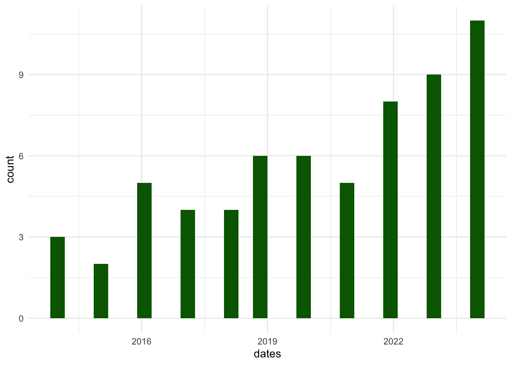

library(hdar, quietly = TRUE) # for API
library(httr, quietly = TRUE) # For lit review
library(httr2, quietly = TRUE)
library(xml2, quietly = TRUE)
library(jsonlite, quietly = TRUE) # For lit review
library(gt, quietly = TRUE)
library(tidyverse, quietly = TRUE) literature_search
An outline of an automated approach to literature searching
1.Choose a database
Let us try ERIC (Education Resources Information Center) database. It is a comprehensive database of education research and information.
# ERIC search
# Define the base URL for the ERIC API
base_url <- "https://api.ies.ed.gov/eric/"Next we can set up some search terms - and we set these to look in the abstract field - here “modern foreign languages” AND “emotions”. We search in different fields (e.g. title or key words) We can also set a date range for the search. Here 2014-2024 is used as an example.
# Set up the query parameters (you can customize the search query)
query_params <- list(
search = 'description:"modern foreign language" OR "modern foreign languages" OR "French"
OR "Spanish" OR "German" AND description:"emotions" AND
publicationdateyear:[2014 TO 2024]',
format = "json",
rows = 200
)
# Make the API request
response <- GET(base_url, query = query_params)
# Extract the content of the response
content_data <- content(response, as = "text", encoding = "UTF-8")
# Parse the JSON data into a list
results <- fromJSON(content_data, flatten = TRUE)
# Extract the relevant information from the list
titles = results[["response"]][["docs"]][["title"]]
authors = results[["response"]][["docs"]][["author"]]
dates = results[["response"]][["docs"]][["publicationdateyear"]]
abstracts = results[["response"]][["docs"]][["description"]]
# Combine the authors into a single string
authors_vector <- sapply(authors, function(x) {
paste(x, collapse = ", ")
})
# Create a data frame with the extracted information
findings <- data.frame(title = titles, authors = authors_vector, date = dates) %>%
arrange(desc(dates))Show first 10 hits
gt(head(findings, n = 10)) | title | authors | date |
|---|---|---|
| CLEM: A Cross-Language Emotional Metanorm in Children | Johanne Belmon, Magali Noyer-Martin, Sandra Jhean-Larose | 2024 |
| Are Enjoyment, Anxiety and Attitudes/Motivation Different in English Foreign Language Classes Compared to LOTE Classes? | Jean-Marc Dewaele, Kazuya Saito | 2024 |
| Exploring the Motivations and Emotions of Filipino Learners of Languages Other than English: A Structural Equation Modelling Approach | Edward Jay M. Quinto, Ardvin Kester S. Ong, Leah Faye L. Valiente, Leila Joyce B. Olleres, Jasmine Nadja J. Pinugu, Marianne Jennifer M. Gaerlan, John Christopher D. Castillo | 2024 |
| Developmental Trajectories of Achievement Emotions in Mathematics during Adolescence | Michiko Sakaki, Kou Murayama, Anne C. Frenzel, Thomas Goetz, Herbert W. Marsh, Stephanie Lichtenfeld, Reinhard Pekrun | 2024 |
| Complex Dynamics: Investigation of Within- and Between-Person Relationships between Achievement Emotions and Emotion Regulation during Exam Preparation through Dynamic Network Modeling | Martin Daumiller, David W. Putwain, Ulrike Nett | 2024 |
| The Joint Roles of Emotion Regulation and Teacher Support in Shaping Academic Engagement among Chinese Graduate Students Majoring in Foreign Languages: A Qualitative Study | Yongxiang Wang, Siyi Wang | 2024 |
| Teachers' Well-Being and Job Satisfaction: The Important Role of Positive Emotions in the Workplace | Benjamin Dreer | 2024 |
| Vicious and Virtuous Relationships between Procrastination and Emotions: An Investigation of the Reciprocal Relationship between Academic Procrastination and Learning-Related Anxiety and Hope | Christopher K. Gadosey, Theresa Schnettler, Anne Scheunemann, Lisa Bäulke, Daniel O. Thies, Markus Dresel, Stefan Fries, Detlev Leutner, Joachim Wirth, Carola Grunschel | 2024 |
| Changes in Control and Value Appraisals Predict Changes in Learning Enjoyment: A Four-Wave Analysis among Lower Secondary School Students | Anna Hawrot | 2024 |
| That Means Something to Me: How Linguistic and Emotional Experience Affect the Acquisition, Representation, and Processing of Novel Abstract Concepts | Linda Espey, Marta Ghio, Christian Bellebaum, Laura Bechtold | 2024 |
We can then search the abstracts
The we can look at all the abstracts (I have truncated to first 10 here):
gt(head(as.data.frame(abstracts), n=10))| abstracts |
|---|
| The relationship between emotion and language in children is an emerging field of research. To carry out this type of study, researchers need to precisely manipulate the emotional parameters of the words in their experimental material. However, the number of affective norms for words in this population is still limited. To fill this gap, the present report presents a set of 7 norms that measure the emotional parameters (valence, arousal) of words rated by children in French, English, German, Spanish, and Chinese. The high correlations between the valence values and the moderate correlations between arousal values of these norms allow us to determine a cross-language homogeneity of emotional representations in children. Thus, this report introduces a significant metanorm with 508 words characterized by valence and by arousal. This tool is a worthwhile resource for researchers interested in the links between emotion and language, as well as for those interested in cross-language comparisons. The complete database can be downloaded at the following address: https://osf.io/stnbk/ |
| The current study focuses on the effect of the target language on learner emotions and attitudes/motivation. More specifically, it investigates whether the status and prestige of English results in more positive learner emotions and attitudes/motivation compared to less prestigious languages other than English (LOTE). Statistical analyses of a database of 360 students in an English-speaking university in Kuwait enrolled in English, German, Spanish and French as foreign language classes revealed that the LOTE learners (who also knew English) reported significantly more foreign language enjoyment (FLE), equal levels of foreign language classroom anxiety (FLCA) and--surprisingly--lower levels of attitudes/motivation than their peers studying English. Due to confounding variables, it is impossible to establish the cause of the difference with certainty, but this outcome does show that a stronger motivation to study English does not necessarily translate into more enjoyment in class. In other words, while FLE and attitudes/motivation typically correlate, they are independent concepts. |
| Despite rich insights that the experience of Global South countries like the Philippines could offer in understanding emerging trends in SLA research, i.e. learning languages other than English (LOTEs), studies conducted in this context are few and far apart. The study explored the motivations and emotions of 389 Filipino learners of LOTEs who accomplished a 76-item questionnaire. Six factors of LOTE motivation and two factors of LOTE emotions were simultaneously analysed using Structural Equation Modelling (SEM). Composite reliability measures showed that these factors were valid and reliable. Six sets of model fit measures indicated a good fit for the final SEM model. Initial and final direct effects showed that the six factors of LOTE motivation significantly influenced LOTE enjoyment and LOTE anxiety. Against the backdrop of studies dominated by the Japanese and Chinese experiences, the Filipino experience has shown to be equally susceptible to the influences of globalisation and the hegemony of English on learning languages other than English. The final SEM model of LOTE learning among Filipinos is instructive of the multifaceted LOTE motivation, but it also captures the effects of motivational constructs in the 'flowering of emotions' in the context of learners acquiring a language other than English. |
| The current study contributes to the recent debate on the question whether learner emotions can be intrinsically motivating or whether they are no more than diffuse action tendencies (Dörnyei 2020). Adopting a longitudinal approach, we combined repeated analysis of variances and mixed effects modelling to capture interactions between Foreign Language Enjoyment (FLE) and its three dimensions, Foreign Language Classroom Anxiety (FLCA), and Attitudes/Motivation (AM) and its four dimensions over the course of one semester. Participants were 360 foreign language learners of English, German, French, and Spanish in a Kuwaiti university. FLE (and the dimensions FLE Personal and FLE Social) and FLCA remained stable over time but FLE Teacher decreased significantly. Levels of AM also decreased significantly, more specifically, the dimensions Motivation and Attitudes toward the Learning Situation. Mixed effects modelling analyses revealed that FLE (including FLE Personal and FLE Social) and FLCA had medium effects on the AM dimensions. Significant interaction effects were found for FLE Teacher and Time for the AM dimensions. We argue that high FLE can act as a buoy for sagging motivation and thus become intrinsically motivating. |
| Research Findings: In order to examine the explanatory power of behavioral self-regulation in the domain of emotion knowledge, especially in a non-U.S. culture, 365 German 4- and 5-year-olds were individually tested on these constructs. Path analyses revealed that children's behavioral self-regulation explained their emotion knowledge in the context of the less instructionally oriented German kindergarten, much like in the United States. In addition, behavioral self-regulation contributed uniquely to the explanation of German children's emotion knowledge, even when language skills and a measure of verbal conflict inhibition as known predictors of emotion knowledge were included as covariates. The path model for the 4-year-olds underlined the importance of behavioral self-regulation and showed less integration among verbal conflict inhibition, language skills, and emotion knowledge than that for the 5-year-olds. Practice or Policy: Results underline the importance of self-regulation for young children's learning about emotions in all cultures, alone and in tandem with receptive language skills and abilities for (verbal) inhibition. |
| Purpose: The Test for Rating Emotions in Speech (T-RES) has been developed in order to assess the processing of emotions in spoken language. In this tool, spoken sentences, which are composed of emotional content (anger, happiness, sadness, and neutral) in both semantics and prosody in different combinations, are rated by listeners. To date, English, German, and Hebrew versions have been developed, as well as online versions, iT-RES, to adapt to COVID-19 social restrictions. Since the perception of spoken emotions may be affected by linguistic (and cultural) variables, it is important to compare the acoustic characteristics of the stimuli within and between languages. The goal of the current report was to provide cross-linguistic acoustic validation of the T-RES. Method: T-RES sentences in the aforementioned languages were acoustically analyzed in terms of mean F0, F0 range, and speech rate to obtain profiles of acoustic parameters for different emotions. Results: Significant within-language discriminability of prosodic emotions was found, for both mean F0 and speech rate. Similarly, these measures were associated with comparable patterns of prosodic emotions for each of the tested languages and emotional ratings. Conclusions: The results demonstrate the lack of dependence of prosody and semantics within the T-RES stimuli. These findings illustrate the listeners' ability to clearly distinguish between the different prosodic emotions in each language, providing a cross-linguistic validation of the T-RES and iT-RES. |
| This empirical study focuses on students' development of positive and negative achievement emotions during the first year and the beginning of the second year of secondary school. Using multilevel growth curve modelling, the development of the achievement emotions enjoyment, pride, anxiety, hopelessness and boredom during class in general was investigated. Data from 584 students (taken at three different time points during the first year and the beginning of the second year of secondary school in Germany) was analysed by controlling for gender and the type of school. The results confirm the main assumption: positive achievement emotions decline, whereas negative achievement emotions increase after transition to secondary school. The assumption regarding the effects of type of school was also confirmed: students entering a higher track school (German Gymnasium) experience more positive achievement emotions than students in middle track schools (German Realschule) do. However, the decline in these achievement emotions in higher track schools is comparatively worse than for students in middle track schools. The results are discussed with regard to students' further studies, as well as the wider educational implications. |
| In Germany, there are no self-report questionnaires assessing emotion awareness in youth under the age of 16 years or simultaneously with emotion suppression. The "Emotion Expression Scale for Children" (EESC) measuring lack of emotion awareness and reluctance to express emotions in 10- to 15-year-olds can fill this gap. Goal of this study was to evaluate the factorial structure of the German version of the 16-item EESC in a test and a validation sample of overall 588 adolescents (314 boys; M[subscript age] = 11.6 years; SD = 0.74). The original structure comprised of the factors "Poor Awareness" and "Expressive Reluctance" could not be confirmed in the test sample using confirmatory factor analysis. An exploratory factor analysis yield a one-factor structure. Modification process led to an adjusted one-factor model with 13 items, which fitted the data best in the validation sample. The factor was named "Low Emotion Awareness/Suppression." Results indicated that the EESC structure is not measurement invariant. Reasons for missing fit of the two-factor model are discussed. |
| The role of basic emotions in SLA has been underestimated in both research and pedagogy. The present article examines 10 positive emotions ("joy," "gratitude," "serenity," "interest," "hope," "pride," "amusement," "inspiration," "awe," and "love") and 9 negative emotions ("anger," "contempt," "disgust," "embarrassment," "guilt," "hate," "sadness," "feeling scared," and "being stressed"). The emotions are correlated with core variables chosen from three well-known models of L2 motivation: Gardner's integrative motive, Clément's social-contextual model, and Dörnyei's L2 self system. Respondents came from Italian secondary schools, and most participants were from monolingual Italian speaking homes. They described their motivation and emotion with respect to learning German in a region of Italy (South Tyrol) that features high levels of contact between Italians and Germans. Results show that positive emotions are consistently and strongly correlated with motivation-related variables. Correlations involving negative emotions are weaker and less consistently implicated in motivation. The positivity ratio, that is, the relative prevalence of positive over negative emotion, showed strong correlations with all of the motivation constructs. Regression analysis supports the conclusion that a variety of emotions, not just one or two key ones, are implicated in L2 motivation processes in this high-contact context. |
| The paper investigates relations between higher education teachers' approaches to teaching and their emotions during teaching, as well as their emotion regulation strategies. Based on the assumption that the approaches hinge on emotional experiences with higher education teaching and learning, three studies assessed teachers' emotions, their emotion regulation strategies and their approaches to teaching with questionnaires. Study 1, with n = 145 German university teachers and teaching assistants, found relations between positive emotions and the student-oriented approach to teaching, but not with negative emotions. In addition, cognitive reappraisal and expressive suppression were related to the student-oriented approach. Study 2, with n = 198 German teachers, replicated these findings and, in addition, found relations between perspective taking, empathic concern and personal distress, and the student-oriented approach. Study 3, with n = 76 Australian and New Zealand teachers, again replicated and extended the findings by establishing a relation between negative emotions and the content-oriented approach to teaching. The results of all studies together indicate a significant emotional component of the approaches to teaching. Positive emotions are not only directly related to the student-oriented approach, but also partially mediate the relation between cognitive reappraisal and the student-oriented approach. This link seems to generalize to emotional components of empathy. In addition, the cultural-educational context seems to moderate the relations between negative emotions and the content-oriented approach to teaching. Limitations and directions for future research and educational practice are discussed. |
And search for key terms, for example negative emotions - here I am pulling 100 characters either side, but we can set whatever you want.
abstracts %>%
as.data.frame() %>%
str_extract_all(regex(".{0,100}negative emotions.{0,100}", ignore_case = TRUE)) Warning in stri_extract_all_regex(string, pattern, simplify = simplify, :
argument is not an atomic vector; coercing$.
[1] "" "amusement," "inspiration," "awe," and "love") and 9 negative emotions ("anger," "contempt," "disgust," "embarrassment," "gui"
[2] " are consistently and strongly correlated with motivation-related variables. Correlations involving negative emotions are weaker and less consistently implicated in motivation. The positivity ratio, that is, the relat"
[3] "und relations between positive emotions and the student-oriented approach to teaching, but not with negative emotions. In addition, cognitive reappraisal and expressive suppression were related to the student-oriented"
[4] "New Zealand teachers, again replicated and extended the findings by establishing a relation between negative emotions and the content-oriented approach to teaching. The results of all studies together indicate a signi"
[5] "s of empathy. In addition, the cultural-educational context seems to moderate the relations between negative emotions and the content-oriented approach to teaching. Limitations and directions for future research and e"
[6] "s of self-directed language learning is associated with the experience of a variety of positive and negative emotions. Joy, hope, and interest were the prevailing positive emotions that were linked to learning vocabul"
[7] "ary; and frustration, anger, and feeling annoyed were the negative emotions in relation to learning grammar and pronunciation. In general, the study found a strong connection "
[8] "for learning some language skills (such as grammar) initiated and implicated extensive processes of negative emotions. The study contributes to the growing body of knowledge in mobile-assisted language learning, and c"
[9] "691 state assessments were collected. Positive emotions were reported as more intensely compared to negative emotions. Multilevel multiple regression analysis indicated that significant amounts of the variances in the"
[10] "ion were related to positive emotions, whereas time-pressure and control appraisals were related to negative emotions.\", "
[11] "led "individualistic" countries with different educational systems displayed positive and negative emotions in their teaching and what they perceived as an ideal teacher-student relationship. Australian (N ="
[12] "that while both groups viewed the open expression of positive emotions as integral to teaching, and negative emotions to be controlled based on their understanding of professionalism, significant group differences wer"
[13] "ed these emotions, controlling for students' gender, intelligence, and family socioeconomic status. Negative emotions (anger, anxiety, shame, boredom, hopelessness) negatively predicted achievement, and achievement ne"
[14] "ss-cultural variations in mothers' reports of how they would react to their children's positive and negative emotions as triggered by different interpersonal situations and (2) their relations to children's emotion re"
[15] "ere first graders in elementary school. Mothers reported their reactions to children's positive and negative emotions in hypothetical social scenarios and evaluated their children's emotion regulation using a standard"
[16] "icated that enjoyment and pride decreased over time (Glass's [delta]s = -0.86, -0.71). In contrast, negative emotions exhibited more complex patterns: Anger, boredom, and hopelessness increased ([delta]s = 0.52, 0.79,"
[17] ", while their potential for learning is maximised -- can be used in order to understand the role of negative emotions for entrepreneurship education. Providing examples from courses on entrepreneurship for Engineering"
[18] "s. Altogether, the model is able to explain 28.5% of the variance in positive emotions and 39.6% in negative emotions. The strongest predictor of students' positive and negative emotions was the perceived relevance of"
[19] "mitment. Furthermore, positive relationships with peers proved to be of importance for positive and negative emotions as well as for overall life-satisfaction. As expected, emotions at university predicted life-satisf"
[20] "earning outcome tests. As expected, the sensational style led to higher perceived risk and stronger negative emotions than the neutral style. In addition, our results reveal a potential dilemma for environmental educa"
[21] " learning experience. The statistical significance was found in the two categories: the category of Negative emotions related to the category negative perception of educational situation, and the category of German sp"
[22] "requency and psychological well-being, showing relatively stable associations between ostracism and negative emotions, reduced life satisfaction, as well as dysfunctional social behavior across the adult life span.\", "
[23] "as elicited in very few cases, if at all. Still, an ambivalent classroom climate (both positive and negative emotions) increased from the lower to the higher grades. Lastly, versatile implications for theory and pract" HAL search
# Build httr2 request
req <- request("https://api.archives-ouvertes.fr/search/") %>%
req_url_query(
q = "title_t:emotion OR abstract_s:emotion",
wt = "json",
fl = "halId_s,title_s,abstract_s,doiId_s,producedDate_s",
rows = 500)
# Execute request and parse response
response <- req_perform(req)
json_data <- resp_body_json(response)
# Extract document list
docs <- json_data$response$docs
# Flatten list items into a clean data frame
results <- bind_rows(lapply(docs, function(doc) {
tibble(
hal_id = doc$halId_s %||% NA_character_,
title = if (!is.null(doc$title_s)) paste(doc$title_s, collapse = "; ") else NA_character_,
abstract = if (!is.null(doc$abstract_s)) paste(doc$abstract_s, collapse = "; ") else NA_character_,
doi = doc$doiId_s %||% NA_character_,
date = doc$producedDate_s %||% NA_character_)}))Show top 10 results
gt(head(results, n = 10))| hal_id | title | abstract | doi | date |
|---|---|---|---|---|
| hal-01531317 | Emotion feinte, émotion vraie | NA | NA | 2012 |
| hal-04510261 | Émotion et créativité; Emotion and Creativity | La créativité s’enseigne t’elle? Si l’on définit l’enseignement comme une communication de savoirs en vue de leur appropriation par des apprenants, à l’évidence l’enseignement ne suffit pas à développer la créativité.Peut-on former à la la créativité? Si la formation, à son tour, suppose une identification des actes de création en vue de préparer des étudiants à investir ultérieurement leurs ‘capacités à créer’ dans leur activité professionnelle, vraisemblablement celà ne suffit pas non plus. L’idée que j’aimerais soutenir ici est que la créativité n’est pas d’abord un savoir, elle n’est pas d’abord une activité, elle est un rapport entre un sujet et l’ensemble de son activité.; Can creativity be taught? If we define teaching as the communication of knowledge with a view to its appropriation by learners, then teaching is clearly not enough to develop creativity. Can creativity be trained? If training, in turn, involves identifying creative acts with a view to preparing students to invest their 'creative abilities' in their professional activity at a later date, this is probably not enough either. The idea I would like to put forward here is that creativity is not primarily knowledge, it is not primarily an activity, it is a relationship between a subject and the whole of his or her activity. | NA | 2014-11-28 |
| hal-04333911 | Emotion | Les concepts constituent la base de la discipline infirmière. Les appréhender dans une visée scientifique est fondamental pour l'exercice clinique et l'enseignement de la discipline. « Les concepts en sciences infirmières » met à la disposition des infirmiers et infirmières, et autres personnes intéressées, un ensemble de concepts, issu des sciences humaines, utilisés dans la pratique courante des soins. La première partie de l'ouvrage est constituée par une approche épistémologique des concepts : définition, construction, propriétés, transférabilité, évolution, et par une approche pédagogique : enseignement, apprentissage, maîtrise. Dans la deuxième partie une centaine de concepts de soins sont développés selon le modèle d'analyse des concepts de Wilson : présentation, origine, définition, attributs, concepts voisins, utilisation du concept dans la pratique professionnelle. Les 100 concepts sont répertoriés par ordre alphabétique. Certains sont très connus : nursing, besoins, clinique, autonomie, éthique, anxiété, éducation thérapeutique, culture, interdisciplinarité... D'autres un peu moins : résilience, coping, observance, interaction, espoir, motivation, counselling, empowerment... Les auteurs qui ont rédigé les concepts sont des infirmiers et/ou des universitaires qui au cours de leur cursus professionnel ont eu l'occasion d'approfondir le concept. | NA | 2009-04-01 |
| hal-03943840 | Émotion | NA | 10.3917/eres.vande.2019.01.0230 | 2019-09-05 |
| hal-00115440 | Embodiment of emotion and emotion congruent juydgment. | NA | NA | 2004 |
| hal-04096040 | L’émotion comme matière muséale; Emotion as museum material | Bienvenue dans Émotion, un podcast de l’Ocim « à l’écoute des savoirs ». Les musées et les lieux de culture scientifique sont vivants : ils font dialoguer des savoirs, des expériences mais aussi des émotions. Ainsi, une exposition, une médiation, un objet de collection, un dispositif numérique peuvent tour à tour susciter joie, surprise, peur, déception ou encore confiance. Les professionnel·les qui les conçoivent et les animent sont aussi traversé·es par une foule d’émotions : ardeur, espérance, satisfaction, mais aussi doute, irritation ou encore surcharge par exemple. Dans ce podcast, l’Ocim se met à l’écoute des émotions : à travers 8 épisodes, nous voyageons au cœur des musées et de ce qui anime l’humain grâce à la parole de professionnel·les et de chercheur·es engagé·es. "L'émotion comme matière muséale est le no 1 (11 min38). Ce podcast est accompagné de ressources documentaires sur le site de l'OCIM (https://podcast.ocim.fr/themes/emotion/); Welcome to Emotion, an Ocim podcast about "listening to knowledge". Museums and centres for scientific culture are living places: they bring together knowledge, experiences and emotions. So an exhibition, a form of mediation, a collection object or a digital device can in turn arouse joy, surprise, fear, disappointment or even confidence. The professionals who design and run them are also affected by a host of emotions: enthusiasm, hope, satisfaction, but also doubt, irritation or overload, for example. In this podcast, Ocim listens to the emotions: in 8 episodes, we travel to the heart of museums and what drives human beings, thanks to the words of committed professionals and researchers. L'émotion comme matière muséale" is episode 1 (11 min 38). This podcast is accompanied by documentary resources on the OCIM website (https://podcast.ocim.fr/themes/emotion/) | NA | 2020-12-15 |
| halshs-00553076 | Emotion | Une longue tradition associe, en Occident, l'émotion à l'expérience religieuse dans ce qu'elle a de plus universel. Mais l'arrière-plan théologique et les rapports sociaux de domination qui incitent à opposer l'émotion à la raison et à l'institution comme on oppose le corps à l'esprit, ont introduit de nombreux biais dans la compréhension sociologique des émotions religieuses. Après un retour sur les écrits fondateurs de Durkheim et Weber, cet article examine les travaux plus récents qui invitent à prendre pour objet le contenu concret - et divers - des émotions en religion, en les re-situant notamment dans le cadre des relations entre individu et institution.; Emotion has been for long associated with religion in Western minds. But the theological background and the patterns of social domination that tend to oppose emotion to rationality and institution as the body is opposed to the mind, have introduced many biases in the sociological approach of religious emotions. After examining the foundational works of Durkheim and Weber, this article looks at more recent authors who invite to analyze the concret contents and the diversity of emotions in religion, notably in connection with the contemporary evolutions of individuals/institution relationships. | NA | 2010-11 |
| hal-04547526 | Écrire l'émotion, apprendre à écrire l'émotion | NA | NA | 2000 |
| hal-04547684 | Écrire l'émotion, apprendre à écrire l'émotion | NA | NA | 2000 |
| hal-01314720 | Video games in adolescence and emotional functioning: Emotion regulation, emotion intensity, emotion expression, and alexithymia | Video-game users represent 40% of the French population and adolescents are the primary users. Yet excessive playing of video games has become a problem in modern society and is manifesting itself in treatment centers for adolescents. Before attempting to gain insight into this problematic use, we must understand video gaming itself and its implications for the gamer. The aim of this research is to propose an understanding of video-game playing based on some dimensions of emotional functioning such as emotion regulation, emotion intensity, emotion expression, and alexithymia. A total of 159 adolescents took part in the study. Regular gamers regulated their emotions more than irregular gamers did. They also felt their emotions more intensely. But regular gamers expressed their emotions less than irregular gamers did. Finally, the regular gamers' alexithymia level was higher than the irregular gamers' level. Especially, they had more difficulty being emotionally reactive. The avatar's evolution in the virtual environment may help mediate adolescents' problematic emotional experiences to give them meaning and enable their appropriation. As such, video games may act as a medium for projecting and experiencing one's emotional life by staging the emotional self, thereby explaining the engagement of adolescents in video gaming. | 10.1016/j.chb.2016.03.027 | 2016 |
Searching Cairn
req <- request("https://oai.cairn.info/oai.php") |>
req_url_query(
verb = "ListRecords",
metadataPrefix = "oai_dc",
set = "AFCO")
response <- req_perform(req)
extract_cairn_record <- function(record) {
get_dc <- function(field) {
xml_find_all(
record,
paste0(
".//*[local-name()='metadata']",
"//*[local-name()='", field, "']"
)
) |>
xml_text() %>%
paste(collapse = "; ")
}
tibble(
identifier = xml_text(xml_find_first(
record, ".//*[local-name()='header']/*[local-name()='identifier']"
)),
title = get_dc("title"),
author = get_dc("creator"),
date = get_dc("date"),
language = get_dc("language"),
source = get_dc("source"),
journal = get_dc("isPartOf"),
abstract = get_dc("description"),
rights = get_dc("rights")
)
}
xml_test <- resp_body_xml(response)Warning in read_xml.raw(body, ...): xml:id : attribute value
https://www.idref.fr/029950856 is not an NCName [539]
Warning in read_xml.raw(body, ...): xml:id : attribute value
https://www.idref.fr/029950856 is not an NCName [539]Warning in read_xml.raw(body, ...): ID https://www.idref.fr/029950856 already
defined [513]Warning in read_xml.raw(body, ...): xml:id : attribute value
https://www.idref.fr/075206315 is not an NCName [539]Warning in read_xml.raw(body, ...): xml:id : attribute value 118649 is not an
NCName [539]Warning in read_xml.raw(body, ...): xml:id : attribute value 19 is not an
NCName [539]Warning in read_xml.raw(body, ...): xml:id : attribute value
https://www.idref.fr/029304628 is not an NCName [539]Warning in read_xml.raw(body, ...): xml:id : attribute value
https://www.idref.fr/05079907X is not an NCName [539]Warning in read_xml.raw(body, ...): xml:id : attribute value 14 is not an
NCName [539]Warning in read_xml.raw(body, ...): xml:id : attribute value 118748 is not an
NCName [539]Warning in read_xml.raw(body, ...): xml:id : attribute value 118758 is not an
NCName [539]Warning in read_xml.raw(body, ...): xml:id : attribute value
https://www.idref.fr/084330074 is not an NCName [539]Warning in read_xml.raw(body, ...): xml:id : attribute value 9 is not an NCName
[539]Warning in read_xml.raw(body, ...): xml:id : attribute value
https://www.idref.fr/092029396 is not an NCName [539]Warning in read_xml.raw(body, ...): xml:id : attribute value 118754 is not an
NCName [539]Warning in read_xml.raw(body, ...): xml:id : attribute value
https://www.idref.fr/034711899 is not an NCName [539]Warning in read_xml.raw(body, ...): xml:id : attribute value 6 is not an NCName
[539]Warning in read_xml.raw(body, ...): xml:id : attribute value 123906 is not an
NCName [539]Warning in read_xml.raw(body, ...): xml:id : attribute value
https://www.idref.fr/026705893 is not an NCName [539]
Warning in read_xml.raw(body, ...): xml:id : attribute value
https://www.idref.fr/026705893 is not an NCName [539]Warning in read_xml.raw(body, ...): ID https://www.idref.fr/026705893 already
defined [513]Warning in read_xml.raw(body, ...): xml:id : attribute value
https://www.idref.fr/056738757 is not an NCName [539]Warning in read_xml.raw(body, ...): xml:id : attribute value
https://www.idref.fr/030226244 is not an NCName [539]Warning in read_xml.raw(body, ...): xml:id : attribute value
https://www.idref.fr/089904559 is not an NCName [539]Warning in read_xml.raw(body, ...): xml:id : attribute value
https://www.idref.fr/033314462 is not an NCName [539]Warning in read_xml.raw(body, ...): xml:id : attribute value
https://www.idref.fr/067185436 is not an NCName [539]Warning in read_xml.raw(body, ...): xml:id : attribute value
https://www.idref.fr/266285317 is not an NCName [539]Warning in read_xml.raw(body, ...): xml:id : attribute value
https://www.idref.fr/026838192 is not an NCName [539]Warning in read_xml.raw(body, ...): xml:id : attribute value
https://www.idref.fr/033314462 is not an NCName [539]Warning in read_xml.raw(body, ...): ID https://www.idref.fr/033314462 already
defined [513]Warning in read_xml.raw(body, ...): xml:id : attribute value
https://www.idref.fr/030226244 is not an NCName [539]Warning in read_xml.raw(body, ...): ID https://www.idref.fr/030226244 already
defined [513]Warning in read_xml.raw(body, ...): xml:id : attribute value
https://www.idref.fr/089904559 is not an NCName [539]Warning in read_xml.raw(body, ...): ID https://www.idref.fr/089904559 already
defined [513]Warning in read_xml.raw(body, ...): xml:id : attribute value
https://www.idref.fr/026927667 is not an NCName [539]
Warning in read_xml.raw(body, ...): xml:id : attribute value
https://www.idref.fr/026927667 is not an NCName [539]Warning in read_xml.raw(body, ...): ID https://www.idref.fr/026927667 already
defined [513]Warning in read_xml.raw(body, ...): xml:id : attribute value 266 is not an
NCName [539]Warning in read_xml.raw(body, ...): xml:id : attribute value
https://www.idref.fr/030371295 is not an NCName [539]Warning in read_xml.raw(body, ...): xml:id : attribute value
https://www.idref.fr/067208800 is not an NCName [539]Warning in read_xml.raw(body, ...): xml:id : attribute value 288 is not an
NCName [539]Warning in read_xml.raw(body, ...): xml:id : attribute value
https://www.idref.fr/085231533 is not an NCName [539]Warning in read_xml.raw(body, ...): xml:id : attribute value
https://www.idref.fr/026893428 is not an NCName [539]Warning in read_xml.raw(body, ...): xml:id : attribute value
https://www.idref.fr/027182258 is not an NCName [539]
Warning in read_xml.raw(body, ...): xml:id : attribute value
https://www.idref.fr/027182258 is not an NCName [539]Warning in read_xml.raw(body, ...): ID https://www.idref.fr/027182258 already
defined [513]Warning in read_xml.raw(body, ...): xml:id : attribute value
https://www.idref.fr/027182258 is not an NCName [539]Warning in read_xml.raw(body, ...): ID https://www.idref.fr/027182258 already
defined [513]Warning in read_xml.raw(body, ...): xml:id : attribute value
https://www.idref.fr/056738757 is not an NCName [539]Warning in read_xml.raw(body, ...): ID https://www.idref.fr/056738757 already
defined [513]Warning in read_xml.raw(body, ...): xml:id : attribute value
https://www.idref.fr/119667819 is not an NCName [539]Warning in read_xml.raw(body, ...): xml:id : attribute value 250 is not an
NCName [539]Warning in read_xml.raw(body, ...): xml:id : attribute value 251 is not an
NCName [539]Warning in read_xml.raw(body, ...): xml:id : attribute value 118735 is not an
NCName [539]Warning in read_xml.raw(body, ...): xml:id : attribute value
https://www.idref.fr/056738757 is not an NCName [539]Warning in read_xml.raw(body, ...): ID https://www.idref.fr/056738757 already
defined [513]Warning in read_xml.raw(body, ...): xml:id : attribute value 252 is not an
NCName [539]Warning in read_xml.raw(body, ...): xml:id : attribute value
https://www.idref.fr/028310187 is not an NCName [539]Warning in read_xml.raw(body, ...): xml:id : attribute value
https://www.idref.fr/029116376 is not an NCName [539]Warning in read_xml.raw(body, ...): xml:id : attribute value 51467 is not an
NCName [539]Warning in read_xml.raw(body, ...): xml:id : attribute value
https://www.idref.fr/033963746 is not an NCName [539]Warning in read_xml.raw(body, ...): xml:id : attribute value 257 is not an
NCName [539]Warning in read_xml.raw(body, ...): xml:id : attribute value
https://www.idref.fr/026893428 is not an NCName [539]Warning in read_xml.raw(body, ...): ID https://www.idref.fr/026893428 already
defined [513]Warning in read_xml.raw(body, ...): xml:id : attribute value
https://www.idref.fr/026893428 is not an NCName [539]Warning in read_xml.raw(body, ...): ID https://www.idref.fr/026893428 already
defined [513]Warning in read_xml.raw(body, ...): xml:id : attribute value
https://www.idref.fr/056738757 is not an NCName [539]Warning in read_xml.raw(body, ...): ID https://www.idref.fr/056738757 already
defined [513]Warning in read_xml.raw(body, ...): xml:id : attribute value
https://www.idref.fr/03579805X is not an NCName [539]Warning in read_xml.raw(body, ...): xml:id : attribute value 273 is not an
NCName [539]Warning in read_xml.raw(body, ...): xml:id : attribute value 118721 is not an
NCName [539]Warning in read_xml.raw(body, ...): xml:id : attribute value 241 is not an
NCName [539]Warning in read_xml.raw(body, ...): xml:id : attribute value 242 is not an
NCName [539]Warning in read_xml.raw(body, ...): xml:id : attribute value
https://www.idref.fr/060823925 is not an NCName [539]Warning in read_xml.raw(body, ...): xml:id : attribute value
https://www.idref.fr/030226244 is not an NCName [539]Warning in read_xml.raw(body, ...): ID https://www.idref.fr/030226244 already
defined [513]Warning in read_xml.raw(body, ...): xml:id : attribute value 118723 is not an
NCName [539]Warning in read_xml.raw(body, ...): xml:id : attribute value
https://www.idref.fr/033501009 is not an NCName [539]Warning in read_xml.raw(body, ...): xml:id : attribute value
https://www.idref.fr/175273960 is not an NCName [539]Warning in read_xml.raw(body, ...): xml:id : attribute value
https://www.idref.fr/075594412 is not an NCName [539]Warning in read_xml.raw(body, ...): xml:id : attribute value
https://www.idref.fr/035060530 is not an NCName [539]Warning in read_xml.raw(body, ...): xml:id : attribute value
https://www.idref.fr/027182258 is not an NCName [539]Warning in read_xml.raw(body, ...): ID https://www.idref.fr/027182258 already
defined [513]Warning in read_xml.raw(body, ...): xml:id : attribute value
https://www.idref.fr/026893428 is not an NCName [539]Warning in read_xml.raw(body, ...): ID https://www.idref.fr/026893428 already
defined [513]Warning in read_xml.raw(body, ...): xml:id : attribute value 270 is not an
NCName [539]Warning in read_xml.raw(body, ...): xml:id : attribute value 271 is not an
NCName [539]
Warning in read_xml.raw(body, ...): xml:id : attribute value 271 is not an
NCName [539]Warning in read_xml.raw(body, ...): ID 271 already defined [513]Warning in read_xml.raw(body, ...): xml:id : attribute value 118708 is not an
NCName [539]Warning in read_xml.raw(body, ...): xml:id : attribute value 50 is not an
NCName [539]Warning in read_xml.raw(body, ...): xml:id : attribute value
https://www.idref.fr/085231533 is not an NCName [539]Warning in read_xml.raw(body, ...): ID https://www.idref.fr/085231533 already
defined [513]Warning in read_xml.raw(body, ...): xml:id : attribute value
https://www.idref.fr/027182258 is not an NCName [539]Warning in read_xml.raw(body, ...): ID https://www.idref.fr/027182258 already
defined [513]Warning in read_xml.raw(body, ...): xml:id : attribute value 45 is not an
NCName [539]Warning in read_xml.raw(body, ...): xml:id : attribute value
https://www.idref.fr/077398599 is not an NCName [539]Warning in read_xml.raw(body, ...): xml:id : attribute value 47 is not an
NCName [539]Warning in read_xml.raw(body, ...): xml:id : attribute value
https://www.idref.fr/121797112 is not an NCName [539]Warning in read_xml.raw(body, ...): xml:id : attribute value
https://www.idref.fr/113734832 is not an NCName [539]records <- xml_find_all(
xml_test,
".//oai:record",
ns = c(oai = "http://www.openarchives.org/OAI/2.0/")
)
cairn_data <- map_dfr(records,
extract_cairn_record)Show first 10 results
gt(head(cairn_data, n = 10))| identifier | title | author | date | language | source | journal | abstract | rights |
|---|---|---|---|---|---|---|---|---|
| oai:cairn.info:AFCO_205_0003 | Editorial | Jacquet, Pierre | 2003 | fre | Afrique contemporaine | n° 205 | 1 | 2003-03-01 | p. 3-4 | 0002-0478 | AFCO_205 | Cairn | |
| oai:cairn.info:AFCO_205_0005 | Les conséquences de la crise ivoirienne sur les pays sahéliens enclavés : un premier tour d'horizon | Jacquet, Pierre | 2003 | fre | Afrique contemporaine | n° 205 | 1 | 2003-03-01 | p. 5-16 | 0002-0478 | AFCO_205 | Résumé La crise ivoirienne a des conséquences économiques et sociales importantes sur les pays sahéliens enclavés de la sous région. Elle bloque l'approvisionnement des pays qui utilisaient le port d'Abidjan et réduit notablement les débouchés, donc les exportations de ces pays pour qui la RCI représentait un gros marché. Néanmoins, cette crise a révélé la capacité des opérateurs économiques locaux, qui n'ont pas tardé à trouver des solutions de substitution.; The Ivory Coast crisis has some important economic and social consequences on landlocked Sahelian countries in the sub-region. It has disrupted the supply of goods to countries using Abidjan port. It notably reduced their market opportunities by decreasing the level of exports for which Ivory Coast used to be a huge market. Nevertheless, this crisis has also shown a capacity for local economic players in quickly finding alternative supply routes. | Cairn |
| oai:cairn.info:AFCO_205_0017 | La situation économique du Ghana et l'initiative PPTE : une convergence favorable | Barat, Christophe; Massuyeau, Benoît; Spielvogel, Gilles | 2003 | fre | Afrique contemporaine | n° 205 | 1 | 2003-03-01 | p. 17-38 | 0002-0478 | AFCO_205 | Résumé Grâce à ses bonnes performances économiques au cours des années 1980 et 1990, le Ghana s’est attiré la sympathie des institutions de Bretton Woods et leur soutien financier. Avec une alternance politique réussie ce pays conserve et renforce son crédit auprès des bailleurs de fonds ce qui lui permet de bénéficier d’une aide conséquente au moment où le nouveau gouvernement doit redresser une situation financière difficile. Cette aide se traduit notamment par un traitement particulièrement favorable de sa dette dans le cadre de l’initiative PPTE (Pays pauvres très endettés). Après un refus initial d’adhérer à celle-ci, les autorités ont revu leur position. Ce revirement s’explique d’autant plus facilement que les modalités de calcul de l’initiative, assortie à la renégociation des conditions de rééchelonnement en Club de Paris, lui permettent de bénéficier pleinement des réductions de dette tout en limitant au maximum les contraintes de ré-affectation prévues dans l’initiative.; Thanks to good economic performances during the eighties and nineties, Ghana gained the sympathy of Bretton Woods institutions and subsequently their financial support. Today, after a successful changeover of political power, the country keeps and reinforces its credit with donors, which in turn helps Ghana to face up a new and serious financial crisis. Financial assistance notably occurs through a very favourable treatment of its debt under the Heavily Indebted Poor Countries Initiative (HIPC). After a first refusal to take part in the initiative, the government eventually changed its position. This reversal is easily understood by recognizing that the HIPC modalities, together with Paris Club renegotiations, allow Ghana to fully benefit from debt reduction while tampering with the conditions imposed by the initiative on resource allocation. | Cairn |
| oai:cairn.info:AFCO_205_0039 | L'eau, enjeu vital pour l'Afrique | Roche, Pierre-Alain | 2003 | fre | Afrique contemporaine | n° 205 | 1 | 2003-03-01 | p. 39-75 | 0002-0478 | AFCO_205 | Résumé L'Afrique est certainement, dans sa grande diversité, le continent pour lequel les questions d'eau, dans toutes leurs dimensions sociale, politique, environnementale, économique, pèsent le plus lourdement sur l'avenir. On met plus particulièrement ici l'accent sur les institutions capables d'assurer une gestion intégrée de cette ressource à l'échelle des grands bassins, et sur deux volets stratégiques pour le développement, l'alimentation et l'agriculture d'une part et la santé publique, à travers le développement des services d'eau potable et d'assainissement. Dans tous les cas, les efforts de gouvernance et les moyens matériels à mettre en œuvre sont colossaux et supposent une mobilisation collective de toute urgence.; Notwithstanding its large internal diversity, Africa, undoubtedly, is of all continents the one whose future is the most affected by water issues, socially and politically as well as in terms of environment and economic development. This paper emphasises the importance of institutional capacity for an integrated river basins management. Strategic development issues such as food, agriculture and public health are addressed through the challenges of providing access to drinking water and sanitation. Enormous resources and efforts at better governance are required. They demand a very urgent collective mobilisation. | Cairn |
| oai:cairn.info:AFCO_205_0077 | Une approche politique du contrôle de l'eau au Moyen-Orient | Boëdec, François | 2003 | fre | Afrique contemporaine | n° 205 | 1 | 2003-03-01 | p. 77-98 | 0002-0478 | AFCO_205 | Résumé Plus de 50 ans après la création d’Israël, la paix régionale n’est toujours pas installée au Moyen-Orient. L’explosion actuelle de violence semble avoir fait disparaître toute trace d’un processus de paix. Nombreux sont les sujets de tension sous-régionaux. Parmi ceux-ci, le dossier du contrôle des ressources hydrauliques revêt un caractère particulier, même s’il dépasse le seul affrontement israélo-arabe. Dans les trois cas des bassins fluviaux du Nil, du Tigre et de l’Euphrate et du Jourdain, la paix hydraulique ne peut être séparée des autres chantiers d’une paix générale au Moyen-Orient.; Regional peace is still wanted for the Middle East more than 50 years after the birth of the State of Israel. The present outburst of violence seems to have dissipated any prospect for an actual peace process. Causes of tension are numerous in the region. Among these, the issue of water resources control remains a specific challenge, though well beyond the mere confrontation between Israel and the Arabs. The three exemplary cases of Nile, Euphrat-Tigris and Jordan river basins show the vanity of separating these issues from a global peace process for the Middle East. | Cairn |
| oai:cairn.info:AFCO_205_0091 | Le Lesotho Highlands Water Project (LHWP) : une coopération réussie dans l'attente d'une politique régionale de l'eau | Colombani, Philippe | 2003 | fre | Afrique contemporaine | n° 205 | 1 | 2003-03-01 | p. 91-102 | 0002-0478 | AFCO_205 | Résumé Dans un contexte de double enclavement géographique et géopolitique, ainsi que de pauvreté, le Lesotho avec le LHWPa accepté de se transformer en un immense château d’eau au bénéfice de l’Afrique du Sud. Comme toutes les grandes infrastructures de ce type, un tel programme n’a pas échappé aux critiques, notamment des organisations non gouvernementales (ONG). La leçon tirée de l'expérience de ce gigantesque projet est double : une analyse complète de l’ensemble des paramètres du développement durable demeure indispensable avant de se lancer dans des aménagements de grande ampleur ; la gestion de l’eau repose également au moins autant sur la gestion de la demande que sur celle de l’offre.; Being geograpically as well as geostrategically landlocked, the poorest kingdom of Lesotho accepted to become through the LHWP scheme South Africa’s water tower. Like any such huge infrastructure programme, the project was much exposed to criticism, especially from NGOs. Two main lessons emerge from this experience : an holistic approach, integrating all sustainable development parameters, remains a necessary precondition for launching this kind of projects ; and water management depends at least as much on demand as on supply. | Cairn |
| oai:cairn.info:AFCO_205_0103 | Eau et assainissement : croyances, modes et modèles… | Etienne, Janique | 2003 | fre | Afrique contemporaine | n° 205 | 1 | 2003-03-01 | p. 103-117 | 0002-0478 | AFCO_205 | Résumé Les politiques de développement sont généralement influencées par des "idées reçues", souvent rattachées à des contextes très spécifiques et inadaptées à une réalité complexe et multiforme. Cependant, face aux idées erronées sur l'eau et l'assainissement et à la complexité effective du tissu urbain et de l'environnement socio-économique, culturel et politique des pays en développement, les réflexions portent aujourd'hui dans ce secteur sur de nouvelles formes d'engagement des acteurs publics et privés, au niveau international aussi bien que local.; Still and more than once, development policies are influenced by generally accepted ideas elaborated in a very specific context and out of touch with a complex and multifaceted reality. As a way to fight misconceptions on water and sanitation, new reflections are blossoming at the moment. Locally and internationally, they deal with new modes of engagement from public and private actors. | Cairn |
| oai:cairn.info:AFCO_205_0119 | Le prix de l'eau pour les pauvres : comment concilier droit d'accès et paiement d'un service ? | Vincent, Isabelle | 2003 | fre | Afrique contemporaine | n° 205 | 1 | 2003-03-01 | p. 119-134 | 0002-0478 | AFCO_205 | Résumé Le paiement de l'eau est un sujet polémique. On confond d’ailleurs souvent paiement de la ressource et paiement du service. Actuellement, ce sont en fait les populations des quartiers défavorisés qui dépensent des sommes importantes pour une consommation d'eau minimale. Un tel constat conduit à s'interroger sur la pertinence des subventions aux services d'eau et sur l'efficacité des mécanismes tarifaires censés garantir la desserte des plus pauvres.; Water payment is a controversial issue. Moreover, payment of the natural resource and payment of the service are often mixed up. Currently, deprived populations are spending important amounts of money for a limited consumption. This leads to questioning the relevance of subsidies to water services and the efficiency of existing tariff structures that are supposed to guarantee the provision of the service to the poorest. | Cairn |
| oai:cairn.info:AFCO_205_0135 | L'eau gratuite pour tous ? L'exemple de la nouvelle politique de l'eau en Afrique du Sud | Vircoulon, Thierry | 2003 | fre | Afrique contemporaine | n° 205 | 1 | 2003-03-01 | p. 135-150 | 0002-0478 | AFCO_205 | Résumé Enjeu environnemental mais aussi et surtout social et politique, l'eau est encore un bien difficile d'accès pour les foyers pauvres sud-africains. Depuis la fin de l'apartheid, le gouvernement démocratique a fait de la fourniture de l'eau potable un des axes de sa stratégie de développement. Cet article montre que, depuis 1994, le gouvernement sud-africain a oscillé entre deux politiques opposées, l'expansion des infrastructures et la facturation au coût réel, pour finalement inventer en 2000 un moyen terme original et équilibré qui associe gratuité et recouvrement des coûts. Même si théoriquement la politique actuelle fait figure de modèle, il lui reste encore à faire ses preuves dans deux domaines : sa pérennité financière et son efficacité sociale. Ces deux buts sont tous deux incertains mais on ne peut qu'espérer que l'Afrique du Sud réussisse à révolutionner les politiques de l'eau.; An environmental, but also a social and political stake, water is still not easy to afford for poor South African households. Since the end of apartheid, the democratic government has considered the provision of drinking water as part and parcel of its development strategy. This article shows that since 1994 the South African government has tried two very different water policies, one of services extension and one based on costs recovery, before eventually inventing in 2000 a balanced and original policy that combines free water and cost recovery. Even if this policy theoretically looks like a model for development, it still has to demonstrate its financial sustainability and social efficiency. Both are uncertain but one can only hope that South Africa is inventing a new, revolutionary water policy. | Cairn |
| oai:cairn.info:AFCO_205_0151 | La tarification de l'eau au Maroc : comment servir différentes causes ? | Tenneson, Mathilde; Rojat, Dominique | 2003 | fre | Afrique contemporaine | n° 205 | 1 | 2003-03-01 | p. 151-169 | 0002-0478 | AFCO_205 | Résumé Les ressources en eau du Maroc sont limitées et subissent une pollution croissante. L’utilisation rationnelle de l’eau doit concilier l’équilibre financier des réseaux, la satisfaction des besoins (pour l’eau potable) ou la valorisation économique (pour l’irrigation), et la durabilité. La tarification de l’eau ne permet pas d’atteindre simultanément ces différents objectifs. Pour être efficace, elle doit être nuancée dans ses modalités et s’inscrire dans un cadre réglementaire et institutionnel cohérent, représenté, au Maroc, par la loi sur l’eau de 1995 et les agences de bassin.; Morocco’s water resources are limited and increasingly polluted. A sound use of water must combine the recovery of costs, the satisfaction of needs (drinking water), an economic rationale (irrigation water) and sustainability. As an instrument, water pricing is unable to reach these different objectives at once. To be efficient, it has to be adapted and set in a coherent legal and institutional framework, such as, in Morocco, the 1995 water bill and the water basin agencies. | Cairn |
Visualising
We can plot publication years:
dates <- as.data.frame(dates)
ggplot(dates, aes(x = dates)) +
geom_histogram(fill ="darkgreen") +
theme_minimal()`stat_bin()` using `bins = 30`. Pick better value `binwidth`.